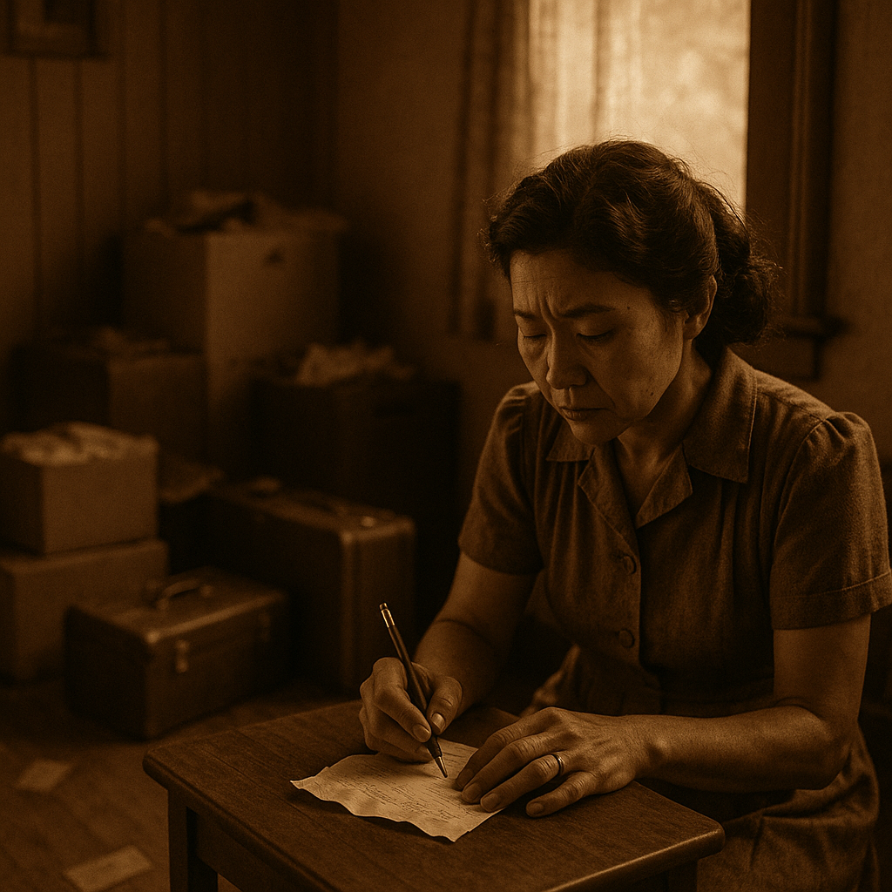
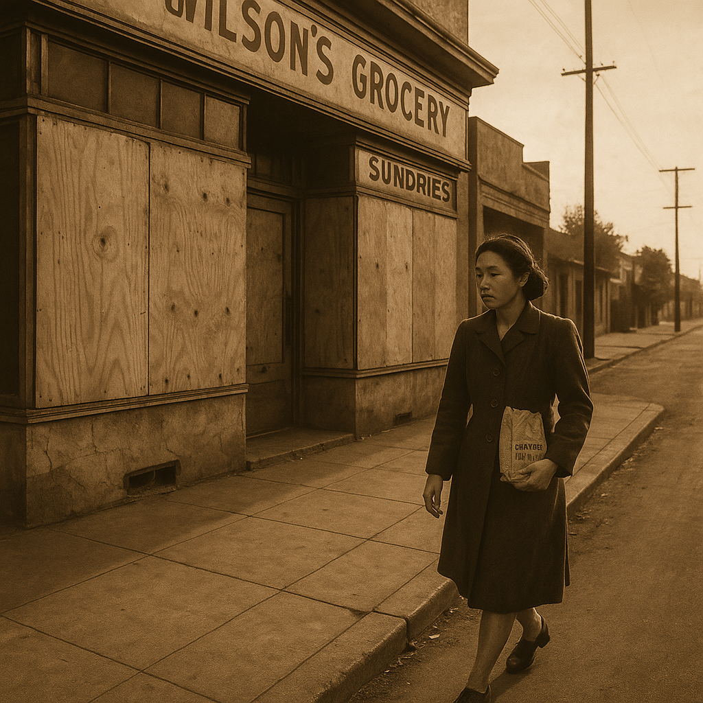
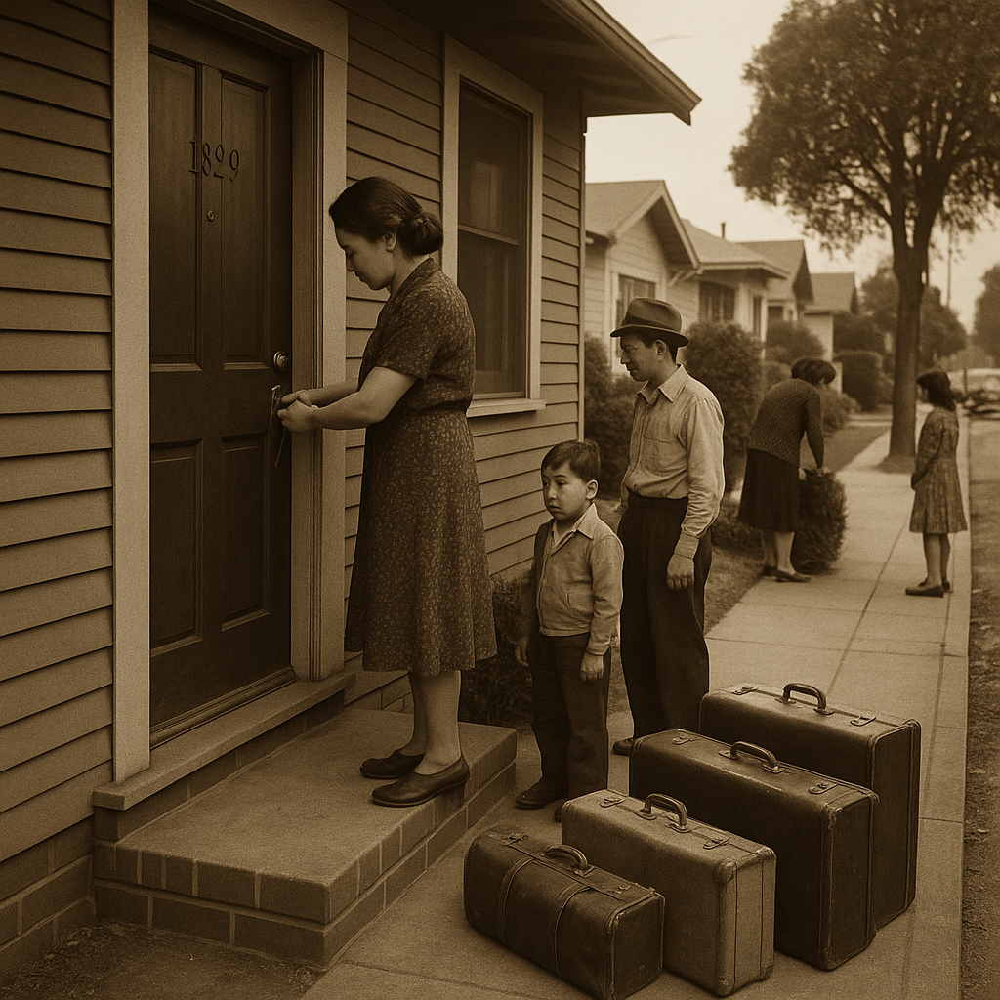

Based on When the Emperor Was Divine
1942年，伯克利，一张驱逐令改变了一切
How do you pack a life in just 72 hours?
In Berkeley, 1942, a Japanese-American woman stood frozen at the post office, staring at Civilian Exclusion Order No. 19.
The notice, slapped on telephone poles and bus benches overnight, demanded her family evacuate their home.
The government gave no choice—leave everything behind or face consequences.
Her hands trembled as she scribbled notes on a crumpled bank receipt, her mind racing with what to carry.

Back home, boxes and suitcases littered the floor.
She moved like a ghost through her neighborhood, passing a grocery store with boards nailed over its windows.
At Rumford Pharmacy, she bought Lux soap and face cream—small comforts for an unknown future.
Every errand felt heavier, each step a countdown.
Nine days after the order, an overdue library notice slipped through her mail slot, a cruel reminder of normal life slipping away.

"Every errand felt heavier, each step a countdown."
What does this sentence tell us about her state of mind?
The regime in power had decided her family didn't belong.
They weren't alone; thousands of Japanese-Americans faced the same orders across the West Coast.
She folded clothes, sorted papers, and packed what little she could.
A suitcase snapped shut. A door locked for the last time.
The street outside was quiet, too quiet, as families prepared to leave behind homes, shops, and memories.
The government's deadline loomed, and there was no turning back.

Q1. What did the Civilian Exclusion Order demand the woman's family do?
Q2. What does "an overdue library notice slipped through her mail slot" suggest?
如果你是文中的女主角，在被迫离开家园的72小时里，你会选择带走什么？这个选择背后反映了什么对你最重要的东西？
参考答案：文中女主角带走了实用物品（肥皂、面霜）和记录（银行收据上的笔记），这反映了在极端压力下人们会优先保留生存必需品和身份证明。每个人的选择都揭示了其价值观——有人选择照片（情感连接），有人选择证件（安全感），有人选择日记（自我认同）。这道题没有标准答案，重要的是思考"什么让我们成为我们自己"。
Based on When the Emperor Was Divine by Julie Otsuka (2002)
Reading Practice · 2026-04-25 · Level 3/5